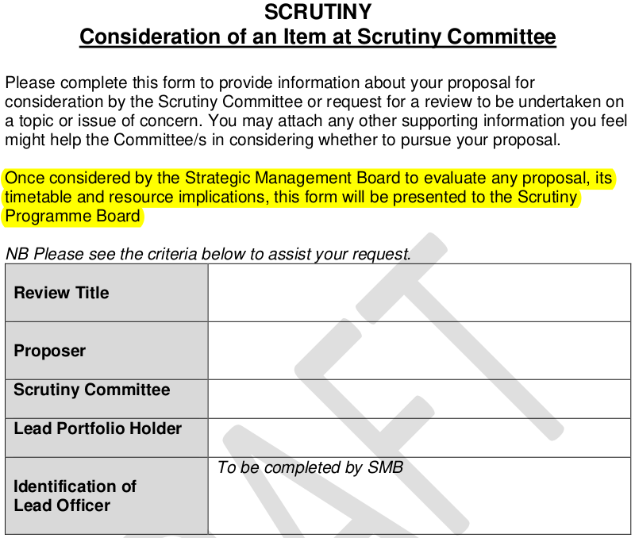

Among Phil Bialyk’s’ first acts after taking over as Exeter City Council leader in 2019 was to initiate a governance review with the express aim of reducing scrutiny of council decision-making. He commended the changes proposed by the governance review working group assembled for the purpose as “appropriate for an ambitious council looking to enhance the democratic process.”
The changes included cutting the time for public questions at council meetings and public scrutiny of council proposals and preventing scrutiny committees from considering executive decisions before they had been made. They also included the creation of a new body, the Scrutiny Programme Board, to decide which issues would be scrutinised and when they would appear on the agendas of one or the other of the council’s two scrutiny committees.
The board is composed of the chairs and vice-chairs of each of the committees, one of which addresses strategic issues, the other council spending and service delivery. The ruling political party takes the chairs of both, with opposition councillors as vice-chairs. In order to guarantee its majority on the board, the council leader also appoints the chair. This was Hannah Packham, the council leader’s wife, until she stood down at this year’s local elections. It is now Naima Allcock, who has just been rewarded for her efforts in the role with a new stipend.
Local council scrutiny and the way it is managed might seem, at first sight, like the kind of topic in which only political insiders and policy nerds might take an interest. However when your council starts making a habit of spending millions of pounds of public money on high-risk schemes behind closed doors, much of it financed by borrowing, whether or not its decisions are being properly scrutinised becomes a more compelling question.
In the four years since the Scrutiny Programme Board took over the city council has made numerous materially-significant decisions that have not been given proper scrutiny. These range from the council’s creation of the unelected Liveable Exeter Place Board, through its decision to allocate £55 million to buy back the Guildhall shopping centre leasehold to the secondment of the council chief executive and another director to work for Exeter City Futures.
Then there’s the council’s expenditure on and governance arrangements with the company, which have never being properly accounted for or explained, the adoption of its subsequently discredited Net Zero Exeter plan, and the council’s agreements in relation to the company’s debt-driven Liveable Exeter property development financing scheme known as Exeter Development Fund.
The council has also altered its Community Infrastructure Levy and student accommodation policies without properly factoring in the impact of the university’s extraordinary expansion or the developing local housing crisis that has accompanied it, and has taken umpteen decisions, many in private, amounting to potential expenditure of more than £104 million in relation to Exeter City Living, before finally deciding to all-but wind up the company.
Local Government Act 2000 frontispiece
The legislation that underpins local government provides for council scrutiny as an essential safeguard against executive overreach. The accompanying statutory government guidance says that the role it plays in holding council decision-makers to account makes it “fundamentally important to the successful functioning of local democracy.”
To enable backbench councillors that sit on scrutiny committees to fulfil this role they are afforded legal powers to “call in” decisions, delaying their implementation so they can be subjected to greater scrutiny, reconsidered and potentially overturned. These councillors, who must not be Executive committee members, also have enhanced powers to access confidential information, in addition to their rights under freedom of information legislation, and can investigate any issue which affects “the area or the area’s inhabitants”.
To conduct investigations scrutiny councillors can choose from a variety of working practices. The government says these include single public meetings focussed on a key topic, sometimes known as “challenge panels”, short reviews conducted over two or three meetings, often called “task and finish working groups”, and longer versions of the same model that take six or seven meetings over several months and are typically called “spotlight reviews”.
Scrutiny councillors can also set up permanent sub-committees which are often, but not always, known as “standing overview groups”. Their purpose is to “keep a watching brief over a critical local issue”, as the government puts it.
Scrutiny councillors operating in all these modes, as well as when meeting in regular scrutiny committees, can call councillors, council officers and representatives of external bodies to attend and give evidence, like parliamentary select committees. Councillors and council officers are required to comply. The model for local council scrutiny that is proposed by Exeter City Council’s external auditor is the widely-admired House of Commons Public Accounts Committee. The witnesses it calls to give evidence are often intimidated by its reputation for uncovering the truth.
Statutory government guidance on overview and scrutiny
The government guidance also says that local council scrutiny should concentrate on delivering work that is “of genuine value and relevance to the work of the wider authority”. It adds: “The executive should not try to exercise control over the work of the scrutiny committee. This could be direct, e.g. by purporting to ‘order’ scrutiny to look at, or not look at, certain issues, or indirect, e.g. through the use of the whip or as a tool of political patronage.” It repeats: “The executive should not direct scrutiny’s work.” Nevertheless, since the Scrutiny Programme Board took over, Executive committee members have directed council scrutiny work several times.
In July 2020 the Executive committee decided that the Scrutiny Programme Board would “agree that work be undertaken by the relevant committee to investigate the continued appropriateness of the statue of General Buller”. Two days later the board created a task and finish working group that was charged with carrying out the Executive committee’s wishes. It met four times before recommending the relocation of the statue. A public consultation was to follow but was scrapped a few weeks later after Robert Jenrick, then local government secretary, said to no-one’s surprise that the government would overturn such decisions if it was so minded.
Then in April last year the Scrutiny Programme Board again obliged when the council leader wanted a task and finish working group to review the council’s street naming and numbering policy. All the output report proposed was “minor revisions” to the policy. These included a “six year retention period on correspondence”, that “street names should not be more than 30 characters long” and that the council would “instruct developers to site street nameplates prior to the occupation of new properties”. The resulting policy subsequently took up space on two more council meeting agendas before being signed off.
Then in December, at the behest of Executive committee member Duncan Wood, the Scrutiny Programme Board created another task and finish working group. This one was to ensure that food provided at internal council meetings would be “plant-based” and that “all council-run external sites including leisure centres, cafes and restaurants have plant-based options available”. It met four times earlier this year with unquantifiably small impact. A follow-up review was announced in May which will require even more of the council’s scarce scrutiny resources.
Local Government Act 2000 section 9F
We know about the these decisions to bend scrutiny to executive will because they were made in public meetings. The Scrutiny Programme Board, however, meets in private.
The local government legislation that lays out how council scrutiny works makes clear that the power to determine its operations rests with scrutiny committees themselves and that other council committees, including the Executive committee, cannot override their members’ rights. It also makes clear that scrutiny committees can only pass their powers, such as the power to determine scrutiny operations, to scrutiny sub-committees, such as the Scrutiny Programme Board, that comply with the Local Government Act 1972.
This means that the Scrutiny Programme Board should be holding its meetings in public. It also means the board should publish its agendas and reports in advance with minimum notice periods and keep proper records of its proceedings, including its decisions, in the form of published minutes. The statutory guidance reinforces these rules: it says decisions about which issues will and will not be subject to scrutiny must be made in public for all to see, and that the Scrutiny Programme Board “should be able to justify how and why a decision has been taken to include certain issues and not others”.
The Local Government Act 1972 has been amended and extended by various pieces of legislation since, but nothing substantial has changed since 2011. The government’s statutory guidance on council scrutiny was published a week before Phil Bialyk took over as council leader. Yet the Scrutiny Programme Board did not comply with either when it was created and still does not now.
In September last year it published its first annual report, a review of what scrutiny had “achieved” during the preceding year. Like its near-identical and equally flimsy successor, approved at last week’s full council meeting without comment, it includes little more than a list of scrutiny councillors and the scrutiny committee meetings that took place. Each year this report makes its way through no fewer than four council meetings, purposelessly taking up space on their agendas. No other council committee does this, but then no other council committee is trying to hide in plain sight of the law.
Local Government Act 2000 section 9FA
For the first eighteen months no minutes were kept of Scrutiny Programme Board meetings, so there are no records at all of its decisions about which topics it did or did not select for scrutiny. Then in April 2021 a pro forma was created for councillors to propose scrutiny topics for selection. The Scrutiny Programme Board began using these forms soon after but records were still not kept and councillors could not see what happened if they submitted one of the forms.
Over time it became clear that submitting one might lead to nothing happening at all. In February last year Michael Mitchell suggested the introduction of time limits for the Scrutiny Programme Board to address these submissions. There is no record of the board’s response, but time limits were not introduced. Unsurprisingly, as their scrutiny proposals were being ignored, most councillors gave up submitting them altogether. By this September none of the members of the strategic scrutiny committee meeting had submitted one in more than eighteen months.
In October last year Exeter Observer submitted a freedom of information request for all the records the council held concerning Scrutiny Programme Board meetings since its inception. The council took nearly four months to disclose the documents it possessed, four times the maximum response time allowed by law. Five days later the Scrutiny Programme Board decided that notes (not minutes) of its meetings would be posted as council bulletins. While it is possible to find these on the council website it is doubtful that many people know they exist, let alone how to receive notifications that they have been posted.
(As the council stopped livestreaming scrutiny committee meetings more than two years ago, it may be that few members of the public even know that the committees themselves exist.)
The first bulletin, which outlined what happened at the January 2023 Scrutiny Programme Board meeting, wasn’t published until April. Bizarrely, it says the bulletin would enable members of the public “to be aware of the matters potentially coming to scrutiny.” It also says that Executive committee members can propose issues for scrutiny. It’s not clear whether this demonstrates council defiance or ignorance of the legislation and guidance.
23 January 2023 Scrutiny Programme Board notes, posted as council bulletin on 17 April
The first bulletin also mentioned the introduction of a scrutiny work plan in March this year, although the Scrutiny Programme Board had been privately using this approach to set the agendas of both scrutiny committees for more than two years by then. Eight such work plans have since been published, four for each scrutiny committee in twin pairs.
Of more than 60 individual scrutiny agenda items included in these plans, only three appear as a result of scrutiny councillors submitting pro forma scrutiny proposals. Almost all the rest are routine reports and presentations, most of which should instead be taken to the Executive committee. Of the three issues that appear as a result of scrutiny councillors submitting pro formas only two have actually been heard at a meeting. The other has disappeared.
Of the two that have been heard, one was the result of a proposal for a task and finish working group to examine governance and oversight of the St Sidwell’s Point leisure centre capital project. Its aim was to learn from mistakes that were made and understand how the budget more than doubled from £25.5 million to £57 million to avoid repeating them in future.
The scrutiny committee that heard this item was presented with an officer report that barely covers four sides of A4. It does not say anything about the multiple budget increases that took place in the first three years of the project. Scrutiny Programme Board member Matt Vizard said he was not convinced that a working group focussed on the St Sidwell’s Point project would serve any useful purpose. Yvonne Atkinson, who became a Scrutiny Programme Board member two months later, said she thought it would be a “total waste of time”.
It had already taken nearly two years for this pro forma scrutiny proposal to make it on to a scrutiny committee meeting agenda. When it did, the working group proposals were rejected and the issue was closed.
The other pro forma proposal that has been heard at a scrutiny committee meeting was intended to be an examination of the new Exeter Local Plan full draft consultation. The Scrutiny Programme Board scheduled this for last month’s strategic scrutiny committee meeting.
The officer report that was presented on the 49,000 word planning policy document that will guide development in Exeter to 2040 was just 850 words long. It is a near word-for-word copy of a report that had already been presented to the Executive committee in October. The consultation had already been open for a month by the time the meeting was held.
 April 2021 Scrutiny Programme Board proposal pro forma
The Scrutiny Programme Board hasn’t just enabled Executive committee members to direct council scrutiny work while trying to hide in plain sight of the Local Government Act. It has filled scrutiny committee meeting agendas with items that have anything but enabled those committees to hold the council’s decision-makers to account. It is apparently so confident it will continue doing this that it is already planning meetings of both committees that are filled with a mixture of Executive committee business and routine reports until March 2025.
Perhaps the councillors who are complicit in all this chicanery are motivated by the political purpose of thwarting the opposition. However Scrutiny Programme Board management of scrutiny work has also enabled senior council officers to direct, defer and divert scrutiny of major issues which need the interrogation that scrutiny is intended to provide. It is not in any councillor’s interests – and is an abnegation of responsibility to the communities they represent – to abet improper officer interference in the democratic process. Without the checks and balances provided by effective scrutiny, democracy doesn’t work.
The council’s Strategic Management Board, composed of its most senior officers, sees proposals for scrutiny before councillors on the Scrutiny Programme Board know they have been submitted. The pro forma that was introduced in April 2021 not only said that the form will go to the Strategic Management Board first, but also that the Strategic Management Board will “evaluate any proposal, its timetable and resource implications” before the form is passed on for Scrutiny Programme Board consideration.
One proposal from scrutiny councillors to review the council’s public toilets provision was “not supported” by the Strategic Management Board and so rejected. A second, to consider including the Healthy Homes standards promoted by the Town and Country Planning Association in the new Exeter Local Plan was met at first with Strategic Management Board “ifs” and “buts”. When it was eventually scheduled for a scrutiny committee meeting in October this year, more than two years later, the full draft plan had already been signed off by the Executive committee, two days earlier.
The item was then postponed for another six weeks, ostensibly so it could be combined with another, related, agenda item. At the subsequent meeting nothing was said about Healthy Homes standards at all and the item has since disappeared from the scrutiny work plan altogether.
A third scrutiny proposal, to examine the “governance, accountability and transparency of the council’s increasing use of commercialisation projects delivered via private companies and partnership arrangements” was deferred for “further clarification” as it appeared to be “directed towards scrutiny of Exeter City Living”. It was submitted in July 2021, just before the company really got into trouble, but has never been taken any further.
Strategic Management Board member Baan Al-Khafaji openly admitted that it assesses scrutiny proposals against how well they align with the council’s corporate objectives and priorities during a meeting in June this year. This is not the purpose of scrutiny. When a committee member raised the idea of scrutiny examining council decision-making, she said that if scrutiny councillors really wanted to do this they would “have to convince us why you think that’s a priority”.
February 2022 Scrutiny Programme Board agenda with chief executive proposals for Exeter Development Fund scrutiny
At one extraordinary Scrutiny Programme Board meeting last year, Karime Hassan, then still council chief executive, attended to put forward his own proposals for scrutiny of Exeter Development Fund, a scheme intended to expose council property assets to private investors that was being promoted by Exeter City Futures, of which he was also CEO at the time. He spelled out who would be invited as witnesses, what they would talk about, the questions that councillors should ask and what the outcome of the scrutiny sessions would be.
The Scrutiny Programme Board obliged: the sessions were held as he had proposed. They resembled sales pitches for the scheme, with the chief executive promoting it to councillors but evading questions he didn’t want to answer from scrutiny councillors who had the temerity to go off-script. The conflicts of interest in his participation were ignored. The company continued to insist it would not share key documents with councillors despite already having worked on the scheme for nearly five years.
By the fourth session many councillors had realised the scheme was extraordinarily risky, based on insufficiently-evidenced assumptions and wouldn’t meet Exeter’s housing needs. The committee voted to set up a task and finish working group to examine it in more detail, with a particular focus on the governance and risk issues that had been raised but not addressed, before a decision could be taken on commissioning a full business case for the fund. The working group’s first meeting was supposed to be held in September, with no further action to be taken before scrutiny councillors had met to “agree a way forward”.
This was in July last year. Corroborating the decision, a corporate risk register update said: “A task and finish group has been established for scrutiny to conclude its consideration of the [Exeter Development Fund] concept”. The same statement was included in the subsequent risk register update. But no task and finish working group meetings were held. In June this year Strategic Management Board member Ian Collinson, who has taken over the development fund mantle from Karime Hassan, told the Scrutiny Programme Board that “further detail was not yet available on the progress of this issue and future meetings” of the working group.
Then in September another corporate risk register update said that consultants had already been appointed to produce a full business case for the development fund despite this not having been agreed by councillors. However, when asked which company had been appointed, the council’s response was that it had, in fact, not yet appointed consultants for this purpose. It nevertheless added that Ian Collinson was in the process of doing so.
September 2021 Scrutiny Programme Board agenda with Progressive Group climate change scrutiny proposal pro forma
The most egregious instance of city council scrutiny evasion is found, however, in its persistent refusal to permit scrutiny of Exeter’s response to the climate crisis.
Scrutiny of citywide decarbonisation had already been suggested by the time of the Scrutiny Programme Board’s second meeting in December 2019. Then as soon as the scrutiny pro formas were introduced in 2021, the Progressive Group of opposition councillors submitted a proposal to scrutinise both council and citywide progress towards achieving net zero. The first Strategic Management Board response was to defer the request for twelve months.
Then the following June Karime Hassan presented a report on the issue which disregarded hundreds of thousands of tonnes of Exeter’s annual emissions. It was based on a citywide greenhouse gas inventory performed by an expert university team which had been restricted to territorial emissions instead of including all three emissions scopes. The council refused to say who had decided to commission the inventory this way.
In response, the committee voted to set up a permanent sub-committee to “scrutinise the all-encompassing piece of work that will be needed by both the city council and all of our partners” to decarbonise Exeter. Precisely the “watching brief over a critical local issue” that the statutory guidance cites as grounds to establish what it calls a “standing panel” under scrutiny powers.
Committee chair Rob Hannaford described the new sub-committee as a “standing overview group” in his proposal to create it, presumably prompted by Devon County Council’s use of this phrase to describe such committees, where he is also a councillor. His proposal was seconded by Conservative councillor Andrew Leadbetter, who also wears a County Hall hat.
The decision was confirmed at the following meeting of the full council then sent to the Scrutiny Programme Board for implementation. The board duly added an item to the September scrutiny committee meeting agenda to discuss the sub-committee’s scope and operation.
July 2022 Scrutiny Programme Board agenda with chief executive responses to June 2022 climate change sub-committee proposals (and not the June 2022 decision to create a climate change sub-committee)
However the Scrutiny Programme Board also considered a report titled: “Comparator information for consideration of a standing overview group proposed by strategic scrutiny committee 16 June”. This tabled Karime Hassan’s response to the decision to create the sub-committee “for the board’s consideration and focus including consideration of timetabling at committee”.
He said: “The focus should primarily be on the council’s own greenhouse gas emissions”, adding “there is limited officer capacity to support work, therefore members should focus on areas already identified in the report to Executive on 5 July”. This was a report into which he had inserted several recommendations that had not been mentioned at the preceding scrutiny committee meeting, which it followed, while omitting several that had, including the decision to create the sub-committee.
The item to discuss the sub-committee’s scope and operation then disappeared from the September scrutiny committee meeting agenda before it was held. When a councillor queried its absence, committee chair Rob Hannaford said he would instead raise the matter at a forthcoming meeting of the council Governance Review Board, of which he was also chair. A Scrutiny Programme Board meeting held the following month confirmed that the November Governance Review Board meeting would deal with the issue.
Three weeks after the November meeting, a corporate risk register update confirmed that a “strategic scrutiny sub-committee for climate change” would be established after the Governance Review Board report was published in January this year.
November 2022 Governance Review Board minutes with second decision to create a climate change sub-committee
The Governance Review Board had its origins in the governance review working group formed by council leader Phil Bialyk in 2019 to reduce scrutiny of council decision-making. It took its proper title in 2021 when the council resolved to establish it permanently to consider amendments to the council’s governance arrangements on an annual basis.
Its January 2023 report did not appear. Then the Governance Review Board itself disappeared and its report, recommending the creation of the climate change scrutiny sub-committee, was deferred indefinitely. It was never published.
Exeter Observer submitted a freedom of information request for the council’s Governance Review Board records. The council flatly refused to provide them. It said their disclosure would “prejudice the effective conduct of public affairs” without providing either grounds or evidence for this claim.
The council then ignored our request for a formal review of its decision, as per the legislation. We complained to the Information Commissioner, who took up our case and stepped in. The council eventually disclosed the documents a week ago, seven months after our request. The Information Commissioner is now considering whether the council simply withheld the documents all this time without good reason.
The Governance Review Board met three times last year. It discussed the limits of the council’s current approach to scrutiny, including its decision to scrap the dedicated officer who previously focussed exclusively on this work. It acknowledged that the council’s attitude to scrutiny needed to change, and said the Scrutiny Programme Board’s role in deciding what should, and should not, be scrutinised required unpicking.
It also explicitly voted in favour of the scrutiny committee decision to set up a climate change sub-committee, referring to the section of the Local Government Act that provides the committee with the powers to do so. It appears that the council’s motive for refusing to disclose the Governance Review Board records was that it didn’t want anyone to know it had suppressed the board’s decision.
January 2023 Governance Review Board report confirming second decision to create a climate change sub-committee (the report was initially deferred to April 2023 before being suppressed)
Despite all these machinations the climate change scrutiny sub-committee has refused to die. A Scrutiny Programme Board meeting held in June this year heard that the issue had been raised at a meeting of the council’s political group leaders. It decided that Yvonne Atkinson would “discuss further” the “content and timing of this sub-committee” with the corporate services director, Baan Al-Khafaji, another Strategic Management Board member.
At the September strategic scrutiny committee meeting an argument then broke out when Yvonne Atkinson tried to postpone a discussion of the climate change sub-committee terms of reference. After an extended dispute, absurdly turning on whether the vote taken to establish the sub-committee the previous June could stand because Rob Hannaford had described it as a “standing overview group”, the committee voted yet again to establish it, this time in no uncertain terms.
At the following full council meeting Yvonne Atkinson then claimed that the minutes recording the decision were inaccurate and sought to change it. The committee vice-chair, who had proposed the vote, said the minutes were correct. The Lord Mayor, presiding, ruled that the minutes should be referred back to the November strategic scrutiny committee meeting to confirm their accuracy.
When the November meeting convened the minutes were agreed to be accurate, with the following full council meeting, which took place last week, accepting the decision.
September 2023 Strategic scrutiny committee minutes with third decision to create a climate change sub-committee
So when will the climate change scrutiny sub-committee hold its first meeting? No date is yet set, but on 9 January 2024 the Executive committee will consider a “citywide net zero report detailing a way forward for coordinating and facilitating city wide net zero for Exeter”. It will be published the week before the meeting.
Will the council finally uphold the law and allow this sub-committee to meet for the first time more than eighteen months after scrutiny councillors exercised their rights to create it? Will it have all the powers such a sub-committee should have to access confidential information and call councillors, council officers and representatives of external bodies to attend and give evidence?
Or will the council find yet another excuse not to do so and instead propose a means of confecting the appearance of addressing citywide decarbonisation, a role for which it employed Exeter City Futures until the company was dissolved this year?
And, whether or not Exeter’s response to the climate crisis merits this form of attention, will the council cease its illicit practice of fettering effective scrutiny irrespective of its focus? January’s Executive committee will also consider an “update briefing report on the governance review working group and its current status”. This provides an opportunity for scrutiny governance reform that the council must surely take.
Scrutiny is failing to fulfil its purpose and the Scrutiny Programme Board is enabling this failure. Council governance changes are urgently needed to prevent Executive committee and senior officer interference in the work of scrutiny, and to comply with the Local Government Act by holding Scrutiny Programme Board meetings in public, publishing their agendas and reports in advance and keeping proper records of their proceedings, including their decisions, in the form of published minutes.
The management of scrutiny committee meeting agendas would then take place transparently, as the law requires, with decisions about which issues will, and will not, be subject to scrutiny made with clear justification for all to see.
Council governance changes are also needed to reflect the fact that scrutiny councillors are entitled to create sub-committees to conduct investigations using a variety of working practices without requiring the full council to approve them. And that Executive committee members are not, whether with worthwhile purpose or otherwise.
Then, and only then, will Exeter City Council scrutiny be able to hold its decision-makers to account and properly perform the role that makes it “fundamentally important to the successful functioning of local democracy”.